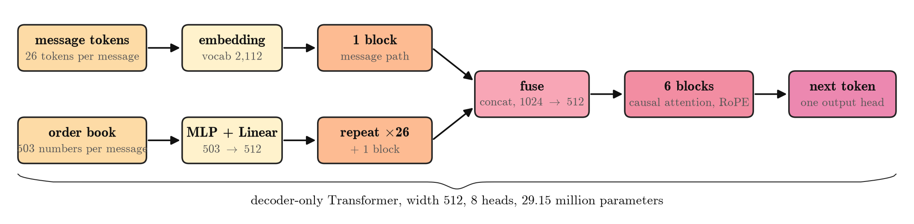
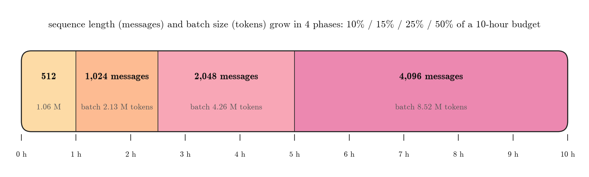
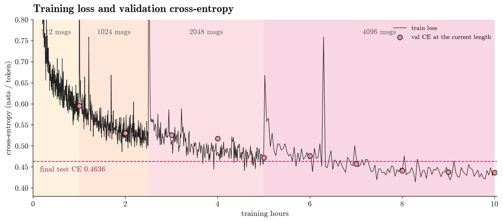
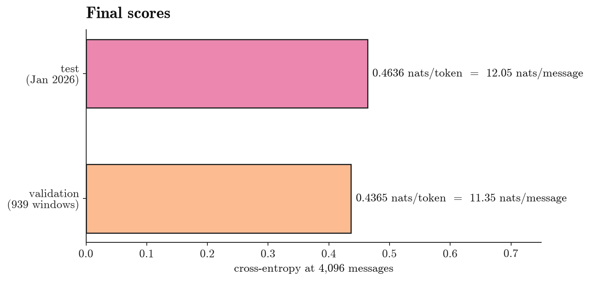

—
—

| Split | Period | Stocks | Messages | Tokens |
|---|---|---|---|---|
| Train | Oct–Dec 2025, 60 trading days | 432 | 11.24 billion | 292.3 billion |
| Validation | 939 random 4,096-message windows from the training quarter | 269 | 3.85 million | 100.0 million |
| Test | Jan 2026, 20 trading days | 432 | 3.34 billion | 86.8 billion |
Book rows where one side of the book is empty are treated as data errors, and any window that touches one is excluded. Real large price moves in thinly traded names are kept.
The sequence length grows in four phases, from 512 to 4,096 messages. Each doubling of length doubles the batch, and the learning rate scales with the square root of the batch.



—
—